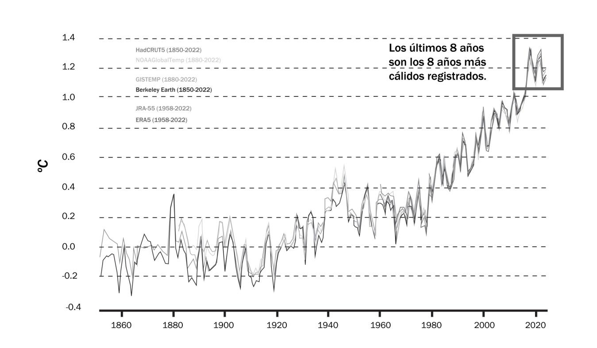
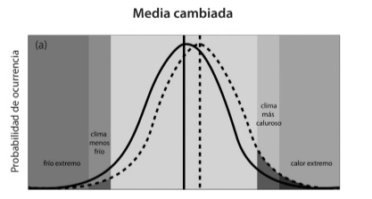
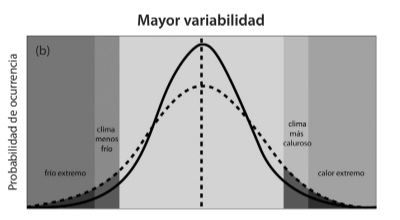
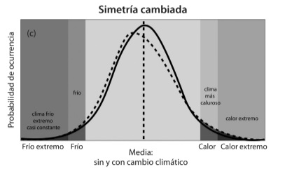
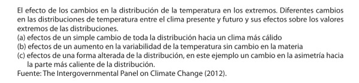

Capítulo 1
¿Qué es la adaptación ante el cambio climático?

Ignacio Lorenzo Arana
Arquitecto por la Universidad de la República en Uruguay, con maestrías en Políticas Públicas y Administración Pública en la Universidad Católica del Uruguay.
Es docente e investigador en teoría de urbanismo, economía urbana y sostenibilidad urbana en el Instituto de Estudios Territoriales y Urbanos de la Universidad de la República y es profesor invitado en temas de cambio climático y adaptación en la Universidad Nacional de Rosario y en FLACSO.
Durante 2015 y 2020 fue negociador en temas de adaptación y pérdidas y daños por Uruguay y por el grupo A-B-U. Durante las negociaciones de la COP 21 en París coordinó y fue vocero del Grupo de los 77 + China en las negociaciones del Artículo 7 de "Adaptación " y del Artículo 8 "Pérdidas y daños ". Fue director de Cambio Climático en el Gobierno de Uruguay entre 2016 y 2020. Durante 2020 colaboró con el Ministerio de Ambiente y Desarrollo Sostenible de Argentina en la preparación de la Comunicación de Adaptación de la República Argentina al Acuerdo de París. En 2022 fue corredactor junto a la Dra. Pilar Bueno de la propuesta de guía técnica para el Reporte bienal de adaptación del Acuerdo de París.
Hoy se desempeña como director de Limpieza y Gestión de Residuos en el gobierno de la ciudad de Montevideo, en donde también lidera los temas de cambio climático, fuera de Uruguay es consultor senior en temas de cambio climático y colabora para varias agencias de cooperación internacional.
Palabras iniciales
Mientras escribo este artículo, la ciudad de Montevideo, Uruguay, en donde vivo, está atravesando su peor sequía histórica, hace más de dos meses que no hay una cantidad suficiente de agua dulce en el sistema de aprovisionamiento metropolitano de agua potable.
En el marco de la crisis hídrica, las autoridades nacionales con el objetivo de que el sistema de saneamiento de la región metropolitana no deje de funcionar están incorporando agua salobre, desde aguas abajo del Río Santa Lucía, al sistema de provisión de agua y mezclándola con lo que queda de reservas de agua dulce, el resultado de esto es que por nuestros grifos sale agua salada, nuestra agua dejó de ser potable.
Al día de hoy, quedan solo 1.175.000 m³ de agua dulce en el embalse de Paso Severino principal embalse del sistema metropolitano, lo que es únicamente 1,2% de las reservas normales, estas reservas alcanzan para menos de dos semanas.
En los últimos días, la población ha corrido a los supermercados en busca de agua embotellada para beber y cocinar, algunas empresas distribuidoras quebraron stocks y en varios momentos en los supermercados no había más botellas de agua para la venta. Las personas más pobres han sufrido aún más esta situación, y para las personas con hipertensión, fallas renales, embarazadas, o lactantes menores a seis meses que toman complemento preparado con agua esta situación se ha vuelto un tema crítico para su salud.
En las calles de Montevideo se comienzan a ver camiones cisterna de emergencia que van de un lugar a otro para abastecer de agua, principalmente a hospitales y otros centros de salud, e incluso se ha dispuesto la construcción de un pozo de agua subterránea dentro de nuestro principal parque urbano.
Hace tres años que estamos en el régimen de La Niña, lo que implica que las precipitaciones en Uruguay son menores a la media. Ya hace más de un año que hay una emergencia hídrica en el sector agropecuario que genera pérdidas económicas muy importantes, lleva al sobreendeudamiento de pequeños productores y a la quiebra de empresas de servicios agropecuarios.
Sin embargo, a pesar de estar en época de La Niña, en el verano del año pasado sobre algunos barrios de Montevideo cayó una lluvia intensa de corta duración, durante la cual en pocas horas llovió lo que, en promedio, llueve en casi dos meses y ocasionó graves inundaciones. Nuestros técnicos no tenían registro de un evento de esta magnitud, y su probabilidad de ocurrencia fue estimada en una vez cada 500 años, una estadística que supera largamente la cantidad de años que tiene Uruguay como nación.
Esta realidad de alta variabilidad climática, en donde la estadística de los datos históricos es llevada a los límites de lo que habíamos observado, es una clara muestra de los efectos del cambio climático en las condiciones meteorológicas. Las acciones que podamos hacer para disminuir los impactos de la próxima sequía o de la próxima inundación son adaptarnos al cambio climático, y deben ser resultado de un proceso participativo, democrático, transparente y basado en la mejor información disponible.
Montevideo, 4 de julio de 2023.
¿Qué es la adaptación al cambio climático?
El cambio climático de origen antrópico es un hecho incontestable, el último informe de la Organización Meteorológica Mundial (OMM) sobre el estado del clima global en 20221 nos indica que la temperatura media global en ese año fue 1,15 oC (entre 1,02 y 1,28 oC) superior a la media de los años que van desde 1850 a 1900. Los años entre 2015 y 2022 fueron los ocho más calientes en el récord instrumental desde 1850, esto es a pesar de estar en el tercer año de La Niña (que son años más fríos).
Cuando la Convención Marco de Naciones Unidas sobre Cambio Climático (CMNUCC) fue adoptada durante la Cumbre de la Tierra en Río de Janeiro, hace ya más de 30 años, la evidencia observada de la suba de la temperatura era aún relativamente escasa y los científicos y gobiernos recurrían a modelos climáticos para develar qué podría ocurrir si se continuaban generando de forma acelerada más y más emisiones de gases de efecto invernadero (GEI).
Temperatura media global
Comparado con el promedio de 1850-1900

Fuente: Organización Meteorológica Mundial(2023)
Estos modelos proyectaban una relación en donde a mayor concentración de emisiones de GEI en la atmósfera, tendríamos una mayor temperatura media global y un mayor cambio en todo el resto de variables meteorológicas, como la humedad o precipitación. También anticipaban un mayor nivel medio del mar, por la expansión térmica de los océanos y el derretimiento de los hielos polares.
En este abordaje inicial, en el inicio de los años 90, tanto desde la reflexión científica como la intergubernamental, se establecieron dos grandes áreas de acción climática: por un lado, la mitigación y, por otro, la adaptación.
La mitigación era, en ese entonces, la más urgente y prioritaria línea de acción climática, porque implicaba una reducción de emisiones de GEI para evitar un cambio climático crítico que amenazaba los equilibrios planetarios y, por ende, la vida humana y la biodiversidad.
Una de las propuestas de mitigación era la disminución de actividades humanas que generasen GEI (por ejemplo, el cierre de industrias térmicas de energía basadas en quema de fósiles, o evitar la deforestación). También se mencionaba el desarrollo de nuevas actividades con beneficios similares pero de menores emisiones (por ejemplo, el cambio en la gestión del rodeo vacuno para alcanzar una productividad de carne similar, pero reduciendo la cantidad de emisiones por kilo de carne); el desarrollo de nuevas actividades con beneficios similares pero de cero emisiones (generación eléctrica eólica); la captura de GEI atmosféricos (por ejemplo, mediante la ampliación de áreas forestales de conservación); o su captura y almacenamiento en fuentes concentradas (por ejemplo, la captura de CO2 en chimeneas industriales y su almacenamiento bajo tierra).
Por otro lado, la adaptación que en esos primeros momentos resultaba más lejana y difusa es definida por el Panel Intergubernamental sobre Cambio Climático (IPCC) como:
Proceso de ajuste al clima real o proyectado y sus efectos. En los sistemas humanos, la adaptación trata de moderar los daños o aprovechar las oportunidades beneficiosas. En algunos sistemas naturales, la intervención humana puede facilitar el ajuste al clima proyectado y a sus efectos"2 (The Intergovernmental Panel on Climate Change, 2014)
A diferencia de la mitigación, que tuvo un desarrollo técnico concreto mucho más temprano e implicó la implementación de varios instrumentos de política pública, tanto a nivel internacional como nacional, que permitieron varias acciones y proyectos, la adaptación se reconocía necesaria, pero era considerada como un tema secundario o de interés solo a aquellos países en desarrollo más vulnerables.
Adicionalmente, en algunos ámbitos políticos o técnicos la adaptación generaba cierta desconfianza, puesto que podía ser entendida como opuesta a la mitigación, incluso porque podía implicar una especie de resignación a que el cambio climático fuera imposible de detener.
Los fuertes impactos visibles de los huracanes Mitch en América Central, Katrina en Nueva Orleans o Sandy en Nueva York; varias sequías extremas en áfrica; grandes inundaciones en América del Sur o en Europa central; el derretimiento de glaciares en América, Europa o Asía; la acidificación de los océanos y su impacto en los corales del Caribe o el Pacífico Sur; o las marejadas de tormenta que amenazan las costas en todo el mundo y, en particular, en los pequeños estados insulares, empezaron a generar un cambio en la perspectiva global de la adaptación, y la convirtieron en una necesidad concreta y urgente para cada vez más personas en el mundo.
En ese sentido, durante la 21ª Conferencia de la Partes (COP) de Paris en diciembre de 2015, la comunidad internacional adoptó un nuevo acuerdo vinculante, en donde la adaptación dejó de ser un tema accesorio o teórico, para ser un capítulo fundamental y urgente de la acción para enfrentar al cambio climático.
Es así que el Acuerdo de París estableció el objetivo mundial relativo a la adaptación, que establece la indicación a los estados parte de:
[…] aumentar la capacidad de adaptación, fortalecer la resiliencia y reducir la vulnerabilidad al cambio climático con miras a contribuir al desarrollo sostenible y lograr una respuesta de adaptación adecuada en el contexto del objetivo referente a la temperatura3 […] (Convención Marco de las Naciones Unidas sobre el Cambio Climático, 2015.)
El Acuerdo de París también recoge de manera estratégica el proceso de adaptación, al priorizar al plan nacional de adaptación (NAP por su sigla en inglés) como instrumento permanente e iterativo. El proceso de NAP implica el desarrollo de arreglos institucionales transversales multinivel y un proceso participativo con todos los actores interesados, incluyendo la sociedad civil, el sector privado y la academia. Este proceso también incluye la identificación de las principales vulnerabilidades, la formulación de medidas de adaptación, el financiamiento, el desarrollo de capacidades y la transferencia de tecnología, así como el monitoreo y evaluación orientada al aprendizaje.
Todos estos elementos desarrollados y acordados en el ámbito internacional dan una orientación a los estados sobre cómo puede ser su proceso nacional de adaptación, no obstante, no implican una definición precisa de cómo adaptarse. Los tomadores de decisión, planificadores e implementadores a nivel nacional y local, todavía presentan dudas sobre qué significa realmente adaptarse y como lograrlo.
Abordajes de la adaptación4
Desde hace más de una década coexistían dos enfoques contrapuestos sobre cómo poner en práctica la adaptación, el primer enfoque mayoritario implicaba considerar el resultado de un conjunto de proyecciones de modelos climáticos futuros, y con esas proyecciones generar uno o varios escenarios de cambio climático que implicaran ajustes al diseño de actividades y procesos.
Generalmente, estos escenarios futuros se centraban en un aumento promedio de la temperatura y de los cambios porcentuales en los promedios de precipitación sobre una región, pero podían decir poco o nada de la distribución del conjunto de variables climáticas y, en particular, de la frecuencia e intensidad de eventos extremos. Esto los hacía muy poco útiles para tomar decisiones robustas a largo plazo, puesto que las principales afectaciones del clima no se encuentran en los promedios, sino en la distribución de todas las variables climáticas y, en particular, en frecuencia e intensidad de los extremos.
Un segundo enfoque contestatario minoritario llamaba a no utilizar el resultado de estos modelos de forma directa para la toma de decisiones dada su incertidumbre y porque sus señales sobre los posibles cambios, muchas veces, eran muy distintas dependiendo de un modelo u otro; incluso existía información contradictoria.
Este segundo enfoque planteaba que, en vez de ver promedios futuros, debíamos observar los datos históricos y el déficit de adaptación5 presente, esto es particularmente relevante en los países en desarrollo, en donde los procesos, actividades e infraestructuras ya presentan déficits e impactos muy fuertes ante el clima observado.




Esta práctica tenía como premisa el hecho de que cualquier acción de adaptación ante el clima observado iba a ser útil ante un cambio climático futuro e iba a reducir potenciales riesgos, o sea, reducir el déficit de adaptación presente para reducir el déficit futuro. Esta lógica de trabajo, si bien resulta adecuada para la toma de decisiones de adaptación con efectos en el corto plazo, presenta también problemas y dificultades en la toma de decisiones de largo plazo, por ejemplo, ante el manejo costero, el manejo de ecosistemas, o el diseño de grandes infraestructuras y ámbitos urbanos.
En años más recientes se ha plantado un tercer enfoque emergente y superador que implica identificar la dimensión temporal de las decisiones que se toman en el presente.
O sea, si la vigencia de una decisión son los próximos meses (por ejemplo, qué, cuánto y cuándo plantar en agricultura en el corto plazo) o si la decisión tendrá una vigencia de muchos años, incluso décadas, (por ejemplo, la ubicación, tamaño y altura de un puerto).
Dependiendo de la dimensión temporal de las decisiones, se puede utilizar un enfoque de adaptación basado en la variabilidad climática presente si es para el corto plazo, o si es de largo plazo puede requerir enfoques más complejos, incluso denominados explícitamente "adaptativos".
Esto quiere decir que el diseño resultante de esa decisión debe tomar en cuenta diversos comportamientos, incluyendo la consideración de varios escenarios climáticos debe incorporar toda la variabilidad climática y el comportamiento de frecuencia e intensidad de eventos extremos, pero también debe considerar escenarios socioeconómicos y de otras variables ambientales.
Este enfoque de adaptación de largo plazo implica tomar decisiones que incorporen explícitamente la incertidumbre y la complejidad y que logren alcanzar decisiones "más robustas" y "sin arrepentimiento", bajo el principio precautorio pero, al mismo tiempo, "costo-efectivas".
Todo esto puede parecer en extremo desafiante y, sin duda, pone a prueba las capacidades y el conocimiento humano y su relación con el futuro pero, por otra parte, dicho ejercicio debe hacerse para alcanzar mejores decisiones, que aprovechen las oportunidades y disminuyan las amenazas del cambio climático.
Estas decisiones de largo plazo basadas en incertidumbre deben incorporar todo el conocimiento disponible de forma explícita, aún si es contradictorio; deben incorporar a todas las partes interesadas, deben ser transparentes, legítimas y democráticas. Y también deben ser capaces de monitorearse y ajustarse en el tiempo a medida que el clima va cambiando.
Un asunto particular en relación a la adaptación bajo este enfoque es que la real magnitud futura del cambio climático está inmersa en una "cascada de incertidumbres". En primer lugar, no sabemos cómo evolucionará la sociedad y la economía global y, con ello, no sabemos cuáles serán los niveles de emisiones de GEI acumuladas en el futuro. Por otra parte, si bien existe clara evidencia del vínculo entre las emisiones de GEI y el aumento de temperatura media global, a medida que tenemos mayores emisiones los rangos de cambio en la mayoría de variables climáticas muestra divergencias.
Por último, también desconocemos con precisión cómo los diferentes niveles de cambio en el clima pueden afectar e impactar a los sistemas socioecológicos.
En este sentido la adaptación al cambio climático no es simplemente adaptarnos al clima del futuro, sino adaptarnos a la incertidumbre del clima del futuro.
La vulnerabilidad como concepto clave para la adaptación
La vulnerabilidad es un concepto complejo que nos permite posicionarnos para la adaptación. Es tanto un diagnóstico integral, como un concepto operacional-funcional-estratégico. Es un primer paso que nos permite construir estrategias de adaptación que dependan de nuestra propia realidad, más allá de lo que el cambio climático nos depare.
En el desarrollo de este concepto complejo, el IPCC6 plantea las siguientes definiciones:
Vulnerabilidad (V): propensión o predisposición a ser afectado negativamente. La vulnerabilidad comprende una variedad de conceptos que incluyen la sensibilidad o susceptibilidad al daño y la falta de capacidad de respuesta y adaptación.
Exposición (E): la presencia de personas, medios de subsistencia, especies o ecosistemas, servicios y recursos ambientales, infraestructura, o activos económicos, sociales o culturales en lugares que podrían verse afectados negativamente.
Sensibilidad (S): grado en que un sistema o especie resultan afectados, positiva o negativamente, por la variabilidad o el cambio climáticos. Los efectos pueden ser directos (p. ej., una variación del rendimiento de los cultivos en respuesta a una variación de la temperatura media, de los intervalos de temperatura o de la variabilidad de la temperatura) o indirectos (p. ej., los daños causados por un aumento de la frecuencia de las inundaciones costeras como consecuencia de una elevación del nivel del mar).
Capacidad de adaptación (CA): capacidad de los sistemas, las instituciones, los humanos y otros organismos para adaptarse ante posibles daños, aprovechar las oportunidades o afrontar las consecuencias.
A partir de estas definiciones, el IPCC ha planteado que la vulnerabilidad está en función de la exposición, sensibilidad y la capacidad de adaptación, según la siguiente expresión:
V= E × S
CA
Sin perjuicio de estas definiciones teóricas, podemos afirmar que la vulnerabilidad es una condición compleja y relacional pero, al mismo tiempo, refleja una realidad concreta que puede ser observada, medida y entendida hasta cierto punto.
Para ejemplificar a qué nos referimos con vulnerabilidad, podemos ir a otra área de impactos y desastres. Por ejemplo, los grandes terremotos sucedidos en Haití y Chile en 2010, ambos muy cercanos en el tiempo.
En el caso de Haití, sufrió un terremoto el 12 de enero de 7.0 en potencia de magnitud de momento. En el caso de Chile, fue un mes y medio más tarde, el 27 de febrero, y el terremoto y tsunami fue de 8.8 en potencia de magnitud de momento. Si se comparan ambas magnitudes logarítmicas, nos da que el terremoto de Chile fue 63 veces más grande que el de Haití, y liberó 501 veces más energía.
Sin embargo, Haití presentó un escenario de gravedad mucho más grande, algunas estimaciones indican la muerte de más de 300.000 personas, más de 350.000 heridos y 1,5 millones de damnificados. En tanto Chile tuvo 525 muertos.
Esta realidad tan dispar sólo puede comprenderse adecuadamente desde la perspectiva de la vulnerabilidad. Haití presentaba, desde antes del desastre, una mayor condición de vulnerabilidad, dada su debilidad institucional, sus altos indicadores de pobreza, la fragilidad de sus infraestructuras y edificios, la poca capacidad de respuesta durante la emergencia, la falta de conocimiento y procedimientos relativos a movimientos de tierra, entre muchos otros factores. En definitiva, ante un evento natural cuya magnitud fue menor, el impacto en Haití fue mucho más grande, dadas las condiciones de vulnerabilidad intrínseca de dicho territorio y sociedad, vis á vis con la situación chilena.
Comprender la vulnerabilidad de un territorio y su comunidad implica considerar cuál es la realidad social, económica y ambiental y, de forma muy importante, cuáles son sus condiciones de capacidades y conocimiento, individual, grupal, institucional y sistémica para poder abordar tales condiciones.
En un proceso de adaptación, prestar atención a las vulnerabilidades intrínsecas es prioritario, dado que una comunidad o territorio particular seguramente no tendrá condiciones para hacer algo con respecto a lo que pase con el cambio climático global de forma individual, pero sí tendrá más chances de trabajar para reducir su propia vulnerabilidad.
El financiamiento internacional para la adaptación
Cuando hablamos de adaptación al cambio climático en el contexto del Acuerdo de París, es inevitable que abordemos el tema del financiamiento internacional. Dentro de las obligaciones de los países desarrollados está la de proveer financiamiento para la adaptación en los países en desarrollo, sin embargo, los flujos de apoyo observados distan fuertemente de las necesidades relevadas.
De acuerdo al Programa de Naciones Unidas para el Ambiente7, los flujos de financiamiento internacional para la adaptación a los países en desarrollo son de cinco a diez veces más bajos de lo necesario, y esa diferencia se está agrandando. Las necesidades de adaptación anuales están estimadas entre 160.000 y 340.000 millones de dólares al 2030 y entre 315.000 y 565.000 millones de dólares al 2050.
Al final del día, la adaptación requiere muchas inversiones, ya que implica que la infraestructura y el desarrollo que se deben realizar sostendrán un cambio climático futuro con rasgos de incertidumbre. Sin perjuicio de ello, la adaptación se vuelve un imperativo para las inversiones y finanzas de los estados, y complejizan aún más el manejo de las finanzas públicas y la gestión de deuda.
El financiamiento ofrecido por bancos multilaterales de desarrollo, principalmente bajo instrumentos de crédito con garantías soberanas, indica una mayor paridad entre mitigación y adaptación (40% de adaptación, con un estimado de 12.000 millones de dólares anuales en 2020) que los fondos climáticos multilaterales (30% adaptación, con un estimado de 1.000 millones de dólares anuales en 2020). Esto evidencia, por un lado, el menor interés de los países desarrollados en financiar concesionalmente la adaptación de los países en desarrollo y, por otro lado, muestra la demanda incremental de financiamiento para la adaptación de estos últimos, aunque sea a nivel de créditos.
Esta dificultad en el acceso de financiamiento concesional se agrava para países en desarrollo que presentan altos niveles de deuda, y en los cuales los impactos climáticos también afectan su capacidad de desarrollo y crecimiento económico. De forma incremental los impactos climáticos y la adaptación se vuelven un asunto de orden macroeconómico y de estabilidad fiscal.
También ha existido un contexto político negativo al incremento del financiamiento internacional concesional para la adaptación en los países en desarrollo de renta media, media-alta y alta, como lo son la mayoría de los países de América Latina que, además, presentan una muy alta vulnerabilidad climática. Se han observado en años recientes acciones explicitas que limitan el acceso al financiamiento para la adaptación, incluyendo el veto al financiamiento de donación para proyectos de adaptación en contextos de alta vulnerabilidad en países de renta media, como la República Argentina.
Es necesario reforzar las acciones coordinadas de los países en desarrollo para demandar un cumplimiento cabal de las obligaciones de los países desarrollados en relación al aprovisionamiento de financiamiento para la adaptación. Estas acciones pueden considerar, entre otros mecanismos innovadores, el canje de deuda por acciones de mitigación y adaptación, seguros climáticos nacionales, regionales o globales; o pagos por resultados de adaptación; instrumentos todos que reflejan un posicionamiento geopolítico estratégico y urgente para nuestros países.
Principales hallazgos del Grupo de Trabajo II del IPCC en 2022
Desde hace casi 40 años el Panel Intergubernamental ha estado informando a la comunidad internacional, sobre cómo se comporta el clima presente en relación al calentamiento global, así como sobre las principales trayectorias futuras. También el IPCC ha abordado los temas de mitigación y adaptación de forma de proveer conocimiento e información no solo para la toma de decisiones a nivel global, sino también a nivel nacional y local.
En febrero de 2022, el Grupo de Trabajo II sobre Impactos, Adaptación y Vulnerabilidad del IPCC presentó su contribución al Sexto informe de evaluación, a continuación, se extraen un resumen de sus principales hallazgos8.
El cambio climático de origen antropogénico, incluyendo eventos extremos más frecuentes e intensos, ha causado impactos adversos generalizados y pérdidas y daños en la naturaleza y las personas, más allá de la variabilidad climática natural. Algunos desarrollos y esfuerzos de adaptación han reducido la vulnerabilidad. A través de diferentes sectores y regiones, se observa que los sistemas y las personas más vulnerables son afectados desproporcionalmente. El aumento de extremos climáticos ha llevado a algunos impactos irreversibles, al tiempo que los sistemas naturales y humanos son empujados más allá de sus capacidades para adaptarse.
La vulnerabilidad de los ecosistemas y las personas difieren substancialmente dentro y a través de distintas regiones, informados por patrones de desarrollo socio-económico que atraviesan usos insostenibles del océano y la tierra, la inequidad, marginalización, patrones históricos y presentes de inequidad, tales como el colonialismo y la gobernanza. Aproximadamente entre 3,3 y 3,6 mil millones de personas vive en contextos que son altamente vulnerables al cambio climático. Una gran proporción de especies son vulnerables al cambio climático. La vulnerabilidad de los seres humanos y los ecosistemas son interdependientes. Los patrones actuales de desarrollo no sostenible aumentan la exposición de los ecosistemas y las personas a las amenazas climáticas.
El cambio climático, que alcanzará en el corto plazo 1,5 oC, causará aumentos inevitables de las amenazas climáticas y presenta múltiples riesgos para los ecosistemas y los seres humanos. El nivel de riesgo dependerá de las tendencias concurrentes de corto plazo en la vulnerabilidad, exposición, niveles de desarrollo socio-económico y adaptación.
Más allá del 2040, y dependiendo del nivel de calentamiento global, el cambio climático presentará numerosos riesgos a los sistemas naturales y humanos. Para 127 riesgos clave evaluados, sus impactos de medio y largo plazo se multiplican muchas veces más que su impacto observado. La magnitud y tasa de cambio climático y sus riesgos asociados depende fuertemente de las acciones de mitigación y adaptación en el corto plazo, los impactos adversos proyectados y sus pérdidas y daños relacionados escalarán ante cada incremento de calentamiento.
Los impactos del cambio climático cada vez son más complejos y más difíciles de manejar. Múltiples amenazas climáticas ocurrirán en simultáneo, y muchos riesgos climáticos y no-climáticos interactuarán, resultando en un riesgo general más fuerte y una cascada de riesgos a través de todos los sectores y regiones.
El progreso en la planificación e implementación de la adaptación se ha observado a través de todos los sectores y regiones, generando múltiples beneficios. Sin embargo, el progreso en la adaptación está distribuido de forma inequitativa, evidenciándose varios vacíos de adaptación. Muchas iniciativas priorizan únicamente la reducción de riesgos climáticos inmediatos y de corto plazo, lo que reduce la oportunidad para una adaptación transformacional en el largo plazo.
Existen opciones de adaptación que son factibles y efectivas y que pueden reducir los riesgos de las personas y la naturaleza. La factibilidad de implementación de las opciones de adaptación en el corto plazo difiere a través de diferentes sectores y regiones. La efectividad de la adaptación para reducir riesgos climáticos está documentada para contextos, sectores y regiones específicas y decrecen ante un calentamiento en aumento. Soluciones multisectoriales e integradas, que también incorporan las inequidades sociales, y que responden de manera diferenciada a los riesgos climáticos, incrementan la factibilidad y efectividad de la adaptación en múltiples sectores.
Existe también evidencia de procesos de "mal-adaptación" en varios sectores y regiones. Las respuestas mal-adaptativas al cambio climático pueden generar lock-ins de vulnerabilidad, exposición y riesgos que son difíciles y caros de cambiar y pueden exacerbar inequidades existentes. La mal-adaptación puede ser evitada con acciones de adaptación que sean flexibles, multisectoriales, inclusivas que beneficien a muchos sectores y sistemas.
Las condiciones habilitantes son clave para implementar, acelerar y sostener la adaptación en los sistemas humanos y los ecosistemas. Esto incluye el compromiso político y el seguimiento a través de marcos institucionales, políticas e instrumentos con objetivos y prioridades claras, un mayor conocimiento sobre los impactos y soluciones, la movilización y acceso a recursos financieros adecuados, el monitoreo y evaluación, y procesos de gobernanza inclusivas.
La evidencia de impactos observados, los riegos proyectados, los niveles y tendencias de la vulnerabilidad y los límites de la adaptación, demuestran la necesidad urgente de un desarrollo resiliente al clima en todo el mundo. Respuestas integrales, efectivas e innovadoras pueden generar sinergias y reducir los trade-offs entre adaptación y mitigación para avanzar en el desarrollo sostenible.
El desarrollo resiliente al clima puede avanzar cuando los gobiernos, la sociedad civil y el sector privado toman decisiones de desarrollo que priorizan la reducción de riesgos, la equidad y la justicia, y cuando los procesos de toma de decisiones, el financiamiento y las acciones se integran a través de los diferentes niveles de gobierno, sectores y plazos. El desarrollo resiliente al clima es facilitado por la cooperación internacional y por gobiernos en todos los niveles, que trabajan en conjunto con las comunidades, la sociedad civil, las instituciones educativas y científicas, los medios, los inversores y las empresas, y generan acuerdos con grupos tradicionalmente marginalizados, incluyendo a las mujeres, los jóvenes, los pueblos indígenas, las comunidades locales y las minorías étnicas. Estos acuerdos son más efectivos cuando están sustentados por un liderazgo político habilitante, las instituciones, los recursos, incluyendo el financiamiento, así como los servicios climáticos, la información y herramientas de apoyo a la toma de decisiones.
Las interacciones entre una forma urbana cambiante, la exposición y la vulnerabilidad pueden crear en las ciudades y en los asentamientos riesgos y pérdidas inducidas por el cambio climático. Sin embargo, la tendencia global de urbanización también puede ofrecer una oportunidad crítica en el corto plazo para avanzar en un desarrollo resiliente al clima. Una planificación inclusiva e integral, así como las inversiones en las infraestructuras urbanas, incluyendo infraestructuras sociales, ecológicas y físicas, pueden aumentar significativamente la capacidad adaptativa de la ciudad y los asentamientos rurales.
Salvaguardar la biodiversidad y los ecosistemas es fundamental para un desarrollo resiliente al clima, a la luz de las amenazas que el cambio climático les genera a estas y también a sus roles en relación a la mitigación y adaptación. Análisis recientes, a partir de varias líneas de evidencia, sugieren que mantener la resiliencia de la biodiversidad y de los servicios ecosistémicos en una escala global depende de la efectiva y equitativa conservación de, aproximadamente, entre un 30 y 50% de las áreas terrestres, fluviales y oceánicas, incluyendo la totalidad de los ecosistemas cuasi-naturales actuales.
Es inequívoco que el cambio climático ya ha generado disrupciones en los sistemas naturales y humanos. Las tendencias pasadas y presentes del desarrollo no han avanzado en un desarrollo global resiliente al clima. Las decisiones sociales y las acciones que implementemos en la próxima década determinarán el alcance de nuestro desarrollo resiliente al clima en el mediano y largo plazo. Un desarrollo resiliente al clima robusto será limitado si las emisiones actuales de gases de efecto invernadero no se reducen rápidamente, y muy especialmente si el límite de aumento de 1,5 oC es superado. Estos escenarios están constreñidos por el desarrollo pasado, las emisiones y el cambio climático, y serán habilitados por una gobernanza inclusiva, recursos humanos y tecnológicos adecuados, por información, desarrollo de capacidades y financiamiento adecuado.
Acciones de adaptación priorizadas
A través de los planes nacionales de adaptación y las comunicaciones de adaptación, cada país establece sus prioridades para adaptarse. Durante 2020, la República Argentina, a través de la coordinación del Ministerio de Ambiente y Desarrollo Sostenible preparó su Comunicación de adaptación. Allí estableció sus principales prioridades estratégicas para reducir la vulnerabilidad, aumentar la resiliencia y fortalecer la capacidad adaptativa. A continuación, se presentan las principales acciones identificadas:
• Medidas transversales:
- Fortalecimiento de capacidades de los equipos de trabajo gubernamentales.
- Apoyo a la elaboración de los planes de respuesta.
- Abordaje de la adaptación en los planes de acción sectoriales.
- Articulación del sistema de evaluación y monitoreo de la planificación de la adaptación.
- Desarrollo de servicios de información sobre el clima, incluyendo sis temas de alerta temprana.
- Transversalización de la gestión integral del riesgo de desastres.
- Establecimiento de procesos y herramientas para la adaptación basada en ecosistemas.
- Establecimiento de procesos y herramientas para la adaptación basada en comunidades.
- Establecimiento de procesos y herramientas para la transversalización de la perspectiva de género en la planificación de la adaptación.
- Promoción de un proceso participativo para la inclusión intersectorial, interjurisdiccional y de actores clave en la planificación de la adaptación.
- Fomento de la educación y cultura ambiental a través de la sensibilización y el conocimiento de los impactos, riesgos y vulnerabilidades.
- Potenciación del desarrollo de modelos hidrometeorológicos para el manejo de riesgos.
- Planificación de un ordenamiento territorial para un uso del suelo sostenible.
• Medidas sectoriales:
- Agricultura y ganadería:
Manejo sostenible y resiliente de los agroecosistemas.
Desarrollo y promoción de instrumentos de prevención y transferencia del riego climático, y atención de emergencias en la producción agropecuaria.
Investigación, desarrollo y construcción de capacidades para la adaptación en el sector.
- Producción:
Aumento de la resiliencia de los polos y áreas industriales ante eventos extremos.
Modelado y realización de escenarios de impacto en el sector.
- Turismo:
Aumento de la resiliencia de los destinos turísticos, incluyendo zonas de glaciares, ecosistemas vulnerables y áreas costeras.
- Salud:
Fortalecimiento de la respuesta del sistema de salud y de las comunidades ante eventos extremos, incluyendo olas de calor, frío e inundaciones.
Fortalecimiento de la respuesta del sistema de salud y de las comunidades ante el aumento en la distribución de vectores de enfermedades.
- Transporte e infraestructura:
Fortalecimiento del diseño y mantenimiento de la infraestructura de transporte ante los riesgos climáticos.
Desarrollo de la infraestructura fluvial y marítima resiliente.
Evaluación de impactos de corto, mediano y largo plazo en los sistemas de transporte.
- Energía:
Evaluación de los impactos del cambio climático en el sistema energético.
Desarrollo de medidas para asegurar abastecimiento y acceso a energía.
Diversificación tecnológica y territorial de fuentes a través de fuentes sostenibles.
- Biodiversidad y ecosistemas:
Fortalecimiento de la investigación aplicada en la gestión adaptativa de ecosistemas y protección de la biodiversidad.
Fortalecimiento y expansión del Sistema Nacional de áreas Protegidas.
Gestión del patrimonio hídrico con un enfoque integral para asegurar su disponibilidad y uso sostenible.
Cartografiado de las zonas más vulnerables ante la desertificación.
Ejecución de un programa de manejo costero en las áreas más vulnerables.
Evaluación de las alteraciones sufridas por los sistemas de glaciares y periglaciares para desarrollar mecanismos de protección.
Fortalecimiento de la gestión adaptativa de los recursos naturales con un enfoque ecosistémico para asegurar la conservación y el uso sostenible.
Como se puede observar, la República Argentina ha desarrollado un marco amplio y robusto para llevar adelante su proceso de adaptación. Este listado de acciones estratégicas debe estar acompañado de una profundización de las prácticas de articulación interinstitucional y multinivel, y de una participación activa de la sociedad civil, el sector privado y la academia, donde se prioricen objetivos comunes de reducción de vulnerabilidad. También es esencial que se incrementen los recursos económicos y financieros para avanzar fuertemente en estas acciones y, en particular, un incremento sustantivo del financiamiento internacional para apoyar la adaptación en los países en desarrollo.
Conclusiones
La lucha contra el cambio climático es urgente y prioritaria en todo el mundo, se deben realizar los mayores esfuerzos para alcanzar la neutralidad de emisiones en la década del 2040, de forma de evitar un cambio climático extremo e irreversible.
Hay que avanzar fuertemente en el despliegue de medidas de mitigación para reducir al mínimo las emisiones de GEI y aumentar la captura y reservorios de carbono. De otro modo, los impactos climáticos ya observados y la inercia del calentamiento global nos traerán un escenario de mayores pérdidas y daños asociados al clima. Entonces es imperativo que nuestras comunidades avancen en la adaptación y reduzcan sus vulnerabilidades intrínsecas.
En este sentido, la adaptación al cambio climático no es simplemente adaptarnos al clima del futuro, sino adaptarnos a la incertidumbre del clima del futuro. Y debe realizarse a través de un mayor conocimiento y fortalecimiento de nuestras capacidades de adaptación, con procesos transparentes e inclusivos de planificación de adaptación, que incluyan tanto acciones transversales, como específicas de aquellos sectores y territorios más vulnerables.
1) World Meteorological Organization (2022). State of the Global Climate in 2022. World Meteorological Organization. Disponible en: https://public.wmo.int/en/our-mandate/climate/wmo-statement-state-of-global-climate
2) Del punto de vista operacional, el IPCC (2014) ha distinguido distintos tipos de adaptación.
Adaptación autónoma: adaptación en respuesta al clima experimentado y sus efectos, sin planificar explícitamente o centrarse conscientemente en afrontar el cambio climático. Se denomina también adaptación espontánea.
Adaptación basada en el ecosistema (ecosystem-based adaptation):uso de la biodiversidad y los servicios ecosistémicos como parte de una estrategia general de adaptación para ayudar a las personas a adaptarse a los efectos adversos del cambio climático. La adaptación basada en el ecosistema utiliza la gama de oportunidades que presenta la gestión sostenible, la conservación y la restauración de ecosistemas para ofrecer servicios que permitan que las personas se adapten a los impactos del cambio climático. Su objetivo es mantener y aumentar la resiliencia y reducir la vulnerabilidad de los ecosistemas y las personas frente a los efectos adversos del cambio climático. La forma más adecuada de integrarla es mediante estrategias amplias de adaptación y desarrollo (Convenio sobre la Diversidad Biológica, 2009).
Adaptación comunitaria (community-based adaptation):adaptación local inducida por la comunidad. La adaptación comunitaria centra la atención en la potenciación de la autonomía y la promoción de la capacidad de adaptación de las comunidades. Es un enfoque que adopta el contexto, la cultura, el conocimiento, la capacidad de actuación y las preferencias de las comunidades como puntos fuertes.
Adaptación evolutiva: cambio en las características funcionales de las poblaciones o especies como resultado de la actuación de la selección sobre características heredables. El ritmo de la adaptación evolutiva depende de factores como la fuerza de selección, el período de renovación generacional y el grado de cruzamiento (frente a la endogamia).
Adaptación progresiva: acciones de adaptación con el objetivo central de mantener la esencia y la integridad de un sistema o proceso a una escala determinada.
Adaptación transformacional: adaptación que cambia los atributos fundamentales de un sistema en respuesta al clima y a sus efectos.
Gestión adaptativa: proceso de planificación, aplicación y modificación iterativa de las estrategias de modificación para la gestión de los recursos frente a la incertidumbre y el cambio. La gestión adaptativa conlleva el ajuste de los enfoques en respuesta a las observaciones de su efecto y los cambios en el sistema provocados por los efectos de retroalimentación resultantes y otras variables.
Opciones de adaptación:conjunto de estrategias y medidas disponibles y adecuadas para hacer frente a las necesidades de adaptación. Incluyen una amplia gama de medidas que se pueden clasificar como estructurales, institucionales o sociales.
3) "muy por debajo de 2oC y proseguir esfuerzo para no superar 1,5oC."
4) Este capítulo está basado en Terra, R. (2014). Adaptación al cambio y variabilidad climática: respuestas interdisciplinarias. En Astigarraga, L., Terra, R., Cruz, G., Picasso, V.(Coord.), Centro Interdisciplinario de Respuesta al Cambio y a la Variabilidad Climatica: vínculos ciencia-política y ciencia-sociedad.Montevideo: Espacio Interdisciplinario de la Universidad de la República. Disponible en: https://www.circvc.ei.udelar.edu.uy/wp-content/uploads/2016/03/Cambio-climatico_armado-final-2014.pdf
5) Déficit de adaptación: brecha entre el estado actual de un sistema y un estado que minimiza los impactos adversos de las condiciones y la variabilidad climáticas actuales. (The Intergovernmental Panel on Climate Change, 2014)
6) The Intergovernmental Panel on Climate Change(2014).
7) United Nations Environment Programme (2022).
8) Traducción propia no oficial, basada enThe Intergovernmental Panel on Climate Change (2022).